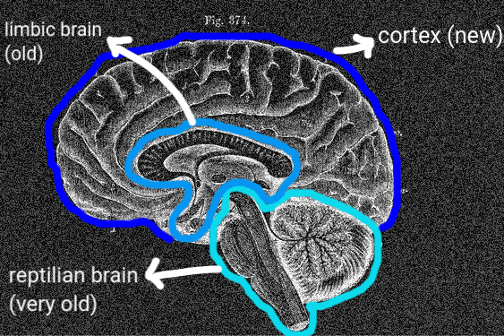
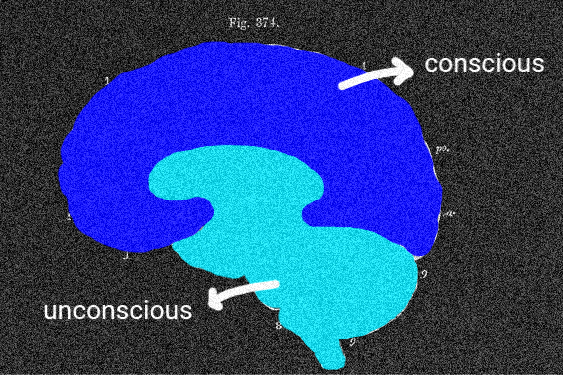

the neurobiology of social bonding
the article only makes sense if you consider the following meanings
- part of the brain that's automatic. our more primitive and evolution-based mechanisms.
- the 'part' you use to reason, think, understand reality.
this isn't the only one, but it's a solid analysis reference, as the differences between these two scopes are quite easy to establish and associate with the brain anatomy. just to clarify, "unconscious" and "conscious" aren't physical parts. it's just a way of referring to the awareness of the processes occurring within us.


social homeostasis
- a natural way of cells, tissues and organisms to seek balance in order to regulate themselves.